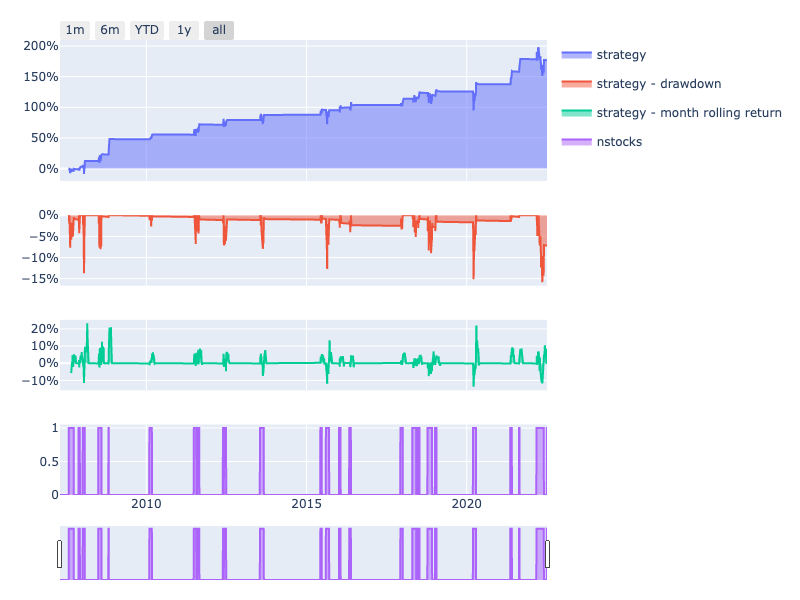
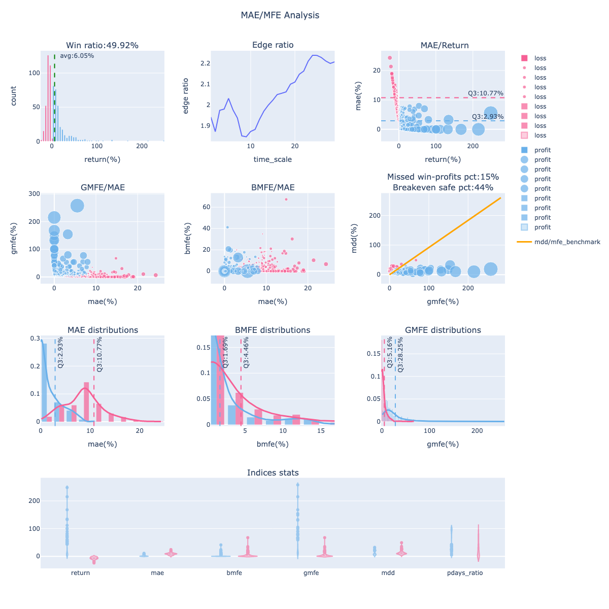

歷史回測
以每日 position 訊號搭配 finlab.backtest.sim，即可快速完成回測並產生選股清單與風險/報酬分析。
快速上手
以下示範以「股價 < 6 元」為條件，每月調整部位：
from finlab import data
from finlab import backtest
# 只買入價格小於 6 元的股票
close = data.get('price:收盤價')
position = close < 6
# 回測，每月底(M)重新調整股票權重
report = backtest.sim(position, resample='M', name="價格小於6的股票")

讓 AI 幫你寫策略
想嘗試更多策略但不確定語法？安裝 FinLab Skill 後，AI 編程助手可幫你撰寫進出場條件、選擇調倉頻率、設定停損停利。
上傳回測至雲端後，可於「選股清單」檢視持股與異動，並手動跟單。

顯示策略回測結果
取得策略交易紀錄
交易紀錄重點欄位
* exit_sig_date:出場訊號產生日。 * entry_sig_date:進場訊號產生日。 * entry_date:進場日。 * exit_date:出場日。 * period:持有天數。 * position: 持有佔比。 * return:報酬率。 * mdd:持有期間最大回撤。 * mae:持有期間最大不利幅度。 * g_mfe:持有期間最大有利幅度。 * b_mfe:mae發生前的最大有利幅度。顯示波動分析圖
策略流動性風險檢測
from finlab.analysis.liquidityAnalysis import LiquidityAnalysis
# 交易紀錄進出場成交張數大於1000張的比例, 成交金額大於1000000元的比例，檢測資金部位胃納量
report.run_analysis(LiquidityAnalysis(required_volume=100000, required_turnover=1000000))

更多範例
創新高策略
以 250 日高點判斷創新高：
from finlab import data
from finlab.backtest import sim
# 創 250 天新高的股票
close = data.get('price:收盤價')
position = (close == close.rolling(250).max())
# 回測，每月(M)調整一次，選出當天創新高股票
sim(position, resample='M', name="創年新高策略")

高 RSI 技術指標策略
取 RSI 最大的 20 檔並持有一週：
from finlab import data
from finlab.backtest import sim
# 選出 RSI 最大的 20 檔股票
rsi = data.indicator('RSI')
position = rsi.is_largest(20)
# 回測，每月(M)調整一次
report = sim(position, resample='W', name="高RSI策略")

乖離率 + 財報濾網
以 60 日乖離率取前 30 名，再用 ROE > 0 濾網：
from finlab import data
from finlab.backtest import sim
# 下載 ROE 跟收盤價
roe = data.get("fundamental_features:ROE稅後")
close = data.get('price:收盤價')
position = (
(close / close.shift(60)).is_largest(30) # 選出乖離率前 30 名的股票
& (roe > 0) # 選出 ROE 大於 0 的股票
)
# 回測，每月(M)調整一次
report = sim(position, resample='M', name="乖離率和ROE濾網策略")

常見錯誤與解決方法
錯誤 1：策略無任何交易記錄
現象：回測完成但無任何交易，get_trades() 回傳空 DataFrame
close = data.get('price:收盤價')
position = (close > 100) & (close < 110) # 條件過嚴
report = sim(position, resample='M')
trades = report.get_trades()
print(len(trades)) # 0
原因：
- 進場條件過於嚴格，導致 position 幾乎全為 False
- 資料日期範圍過短，無足夠交易日觸發進場
- 篩選後的股票池過小或不存在
解決方法：
from finlab import data
from finlab.backtest import sim
close = data.get('price:收盤價')
position = (close > 100) & (close < 110)
# 檢查進場訊號統計
entry_stats = position.sum(axis=1) # 每日進場股票數
print("=== 進場訊號統計 ===")
print(f"平均每日進場股票數：{entry_stats.mean():.2f}")
print(f"最大進場股票數：{entry_stats.max()}")
print(f"最小進場股票數：{entry_stats.min()}")
print(f"有進場訊號的交易日數：{(entry_stats > 0).sum()} / {len(entry_stats)}")
# 如果平均進場數 < 1，表示條件過嚴
if entry_stats.mean() < 1:
print("\n⚠️ 警告：進場條件過嚴，平均每日不到 1 檔股票")
print("建議：")
print("1. 放寬價格區間（如 80-120 元）")
print("2. 使用 .is_largest(N) 確保固定檔數")
print("3. 檢查資料完整性（data.get() 是否正常）")
# 修正範例：使用 is_largest() 確保固定檔數
ma20 = close.average(20)
position_fixed = (close > ma20).is_largest(30) # 固定選出 30 檔
print("\n✅ 改用固定檔數策略：")
print(f" 平均每日進場股票數：{position_fixed.sum(axis=1).mean():.2f}")
# 執行回測並檢查結果
report = sim(position, resample='M', name="測試策略")
trades = report.get_trades()
if len(trades) == 0:
print("\n❌ 錯誤：策略無任何交易記錄")
print("請檢查上方的進場訊號統計，確認條件是否過嚴")
else:
print(f"\n✅ 回測成功，共 {len(trades)} 筆交易")
print(f" 持有期間：{trades['entry_date'].min()} ~ {trades['exit_date'].max()}")
進階診斷：
# 檢查特定時間點的持倉狀態
import pandas as pd
# 隨機抽樣 10 個交易日檢查
sample_dates = position.index[::len(position)//10][:10]
for date in sample_dates:
stocks = position.loc[date][position.loc[date]].index.tolist()
print(f"{date}: {len(stocks)} 檔股票 - {stocks[:5]}...")
# 檢查是否有股票「從未」進場
never_entered = (position.sum(axis=0) == 0)
print(f"\n從未進場的股票數量：{never_entered.sum()} / {len(position.columns)}")
錯誤 2：KeyError - 日期索引錯誤
現象：執行回測時拋出 KeyError，錯誤訊息顯示某個日期不存在
原因：
- 使用多個資料源時，日期索引範圍不一致
- position 的日期範圍超出資料可用範圍
- 使用 shift() 或 rolling() 導致前期資料缺失
解決方法：
from finlab import data
from finlab.backtest import sim
import finlab
# 方法 1：使用 truncate_start 對齊起始日期
finlab.truncate_start = '2020-01-01' # 只回測 2020 年後的資料
close = data.get('price:收盤價')
volume = data.get('price:成交股數')
# 檢查日期範圍
print(f"收盤價日期範圍：{close.index[0]} ~ {close.index[-1]}")
print(f"成交量日期範圍：{volume.index[0]} ~ {volume.index[-1]}")
# 方法 2：手動對齊日期索引
common_dates = close.index.intersection(volume.index)
close_aligned = close.loc[common_dates]
volume_aligned = volume.loc[common_dates]
print(f"對齊後日期範圍：{common_dates[0]} ~ {common_dates[-1]}")
# 方法 3：使用 try-except 捕捉錯誤
try:
position = (close > close.average(20)) & (volume > 1000)
report = sim(position, resample='M')
print("✅ 回測成功")
except KeyError as e:
print(f"❌ 日期索引錯誤：{e}")
print("\n可能原因：")
print("1. 使用 rolling() 或 average() 導致前期資料缺失")
print("2. 多個資料源的日期範圍不一致")
print("\n解決方法：")
print("1. 設定 finlab.truncate_start 統一起始日期")
print("2. 使用 .dropna() 移除缺失值")
# 自動修正：移除缺失值
position_cleaned = position.dropna(how='all', axis=0) # 移除全為 NaN 的列
position_cleaned = position_cleaned.fillna(False) # 將 NaN 填充為 False
print(f"\n✅ 已自動移除缺失值，重新回測...")
report = sim(position_cleaned, resample='M')
print(f" 回測期間：{position_cleaned.index[0]} ~ {position_cleaned.index[-1]}")
進階診斷：檢查 position 完整性
import pandas as pd
# 檢查 position 的缺失值
missing_info = position.isna()
print("=== Position 缺失值統計 ===")
print(f"總缺失值數量：{missing_info.sum().sum()}")
print(f"全部為 NaN 的列（日期）數量：{missing_info.all(axis=1).sum()}")
print(f"全部為 NaN 的欄（股票）數量：{missing_info.all(axis=0).sum()}")
# 顯示前幾個有缺失值的日期
missing_dates = missing_info.any(axis=1)
if missing_dates.sum() > 0:
print(f"\n前 5 個有缺失值的日期：")
for date in position.index[missing_dates][:5]:
na_count = position.loc[date].isna().sum()
print(f" {date}: {na_count} 檔股票缺失")
錯誤 3：忘記設定 resample 導致每日調倉
現象：回測結果報酬率極低，交易次數異常多
原因：
- 未設定 resample 參數，預設為每日調倉
- 每日調倉會產生大量交易成本（手續費 + 證交稅）
- 實際上大多數策略不應該每日頻繁調倉
解決方法：
from finlab import data
from finlab.backtest import sim
close = data.get('price:收盤價')
position = close > close.average(20)
# ❌ 錯誤：未設定 resample（每日調倉）
report_daily = sim(position, name="每日調倉")
trades_daily = report_daily.get_trades()
# ✅ 正確：設定合理的調倉頻率
report_monthly = sim(position, resample='M', name="每月調倉")
trades_monthly = report_monthly.get_trades()
# 對比交易次數與績效
print("=== 調倉頻率對比 ===")
print(f"每日調倉：{len(trades_daily)} 筆交易，年化報酬 {report_daily.stats['annual_return']:.2%}")
print(f"每月調倉：{len(trades_monthly)} 筆交易，年化報酬 {report_monthly.stats['annual_return']:.2%}")
# 通常每月調倉的績效會比每日調倉好（交易成本較低）
if report_monthly.stats['annual_return'] > report_daily.stats['annual_return']:
print("\n✅ 建議使用「每月調倉」，可大幅降低交易成本")
常用調倉頻率：
# 週線策略（適合短線）
report = sim(position, resample='W', name="每週調倉")
# 月線策略（最常用，適合上班族）
report = sim(position, resample='M', name="每月調倉")
# 季線策略（適合長線）
report = sim(position, resample='Q', name="每季調倉")
# 自訂調倉頻率（如每 20 個交易日）
report = sim(position, resample='20D', name="每 20 日調倉")
參考資源
- API Reference - backtest - sim() 完整參數說明
- 策略優化指南 - 找出最佳調倉頻率與停損停利參數
- 完整策略開發流程 - 從研究到實盤的完整流程
- 風險管理完整指南 - 停損停利實戰技巧
- 常見問題 FAQ - 更多疑難排解